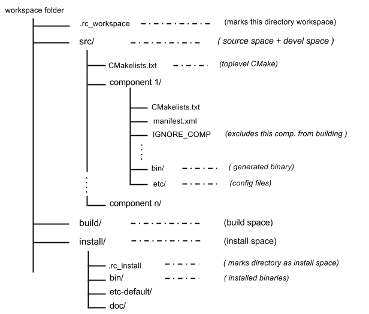

Robocomp Workspace Model
The Robocomp workspace is used by people who are developing components rather than the framework itself.
The main advantage of having a workspace is that it will make the workflow a lot more organized and easier to work with. It basically tidies up the development process.
For example, for building or running a component you have to go to its directory, create a build directory and then use cmake. Using workspace and build tools you could achieve the same in a single command.
The recommended layout for development is as follows:

Elements of a Workspace
Workspace
The workspace is the folder inside which you are going to be actively developing components. Keeping things in a folder with connected development helps keep development models separated. In other words, a workspace can be thought of as a group different components.
For example, Robocomp has some default components, if you create new components, Robocomp’s components can be in a workspace while your components are in another.
The config file in ~/.config/RoboComp/rc_worksapce.config maintains a list of all the registered workspaces.
Source space
The source space (a folder that is inside workspace) contains the source code of all the components in the workspace. The source space is the folder where build tools will look for components.
This folder is easily identified, as it is where the toplevel.cmake is linked to the Robocomp installed folder, and has the name src.
Each component should be in a direct subdirectory.
If the directory contains a file named
IGNORE_COMPthe component will be ignored while building the workspace.
Build Space
The build space is the folder in which cmake is invoked and generates artifacts such as the CMakeCache.
This need not be a direct subdirectory of workspace, it can be anywhere. This is basically a build directory of all the components.
Development Space
The development space is where the build system generates the binaries and config files, which are executable before installation.
It will have a separate directory for each component. Each component directory contains a folder bin which has the build binaries and a etc directory which contain config files. This should be a direct subdirectory of the workspace.
Currently, the devel space is merged with the source space, as you can see in the layout graph.
Install Space
This is the default directory in which components in the current workspace will get installed, along with generated docs. This directory contains a file named .rc_install which marks this as an install space.
Please note that the robocomp install path
/opt/robocompis also an install space by default.